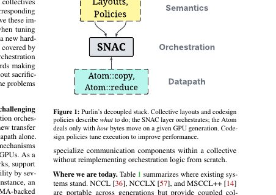
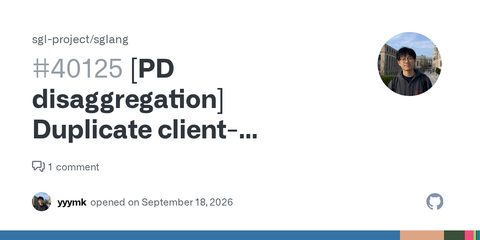
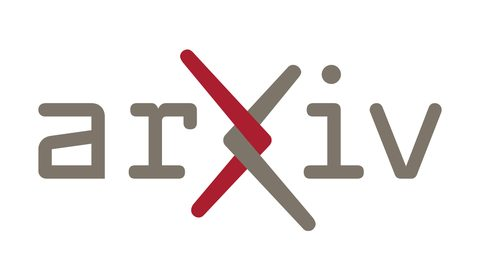
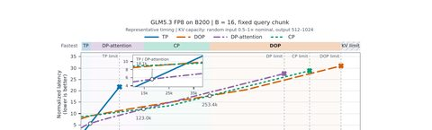
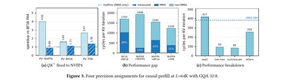
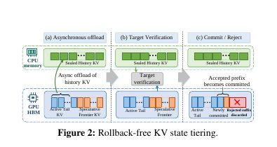

2026-09-30
深读

深读 · Purlin：把集合通信拆成三层，换硬件不再伤筋动骨
> 原文：Purlin: Separating Orchestration from the Datapath of Collectives
简报

多模态推理简报 · 9月30日 00:00
2026-09-29
简报

多模态推理简报 · 9月29日 22:00
简报
多模态推理简报 · 9月29日 20:00
2026-09-30
深读

深读 · SPLASH：注意力并行布局的「运行时换挡」
- 原文：SPLASH: Switching Parallel Layouts of Attention with Seamless Handoff for LLM Serving
2026-09-29
简报
多模态推理简报 · 9月29日 18:00
简报
多模态推理简报 · 9月29日 16:00
深读

深读 · MpFA：Blackwell 上免训练的 FP4 注意力核，QK 压到 4bit、PV 留 8bit 才最快
- 原文：https://arxiv.org/abs/2609.33135
简报
多模态推理简报 · 9月29日 14:00
简报
多模态推理简报 · 9月29日 12:00
深读

深读 · SpecStream：长上下文投机解码，KV 不用搬完就开工
- 原文：https://arxiv.org/abs/2609.33184
简报
多模态推理简报 · 9月29日 10:00